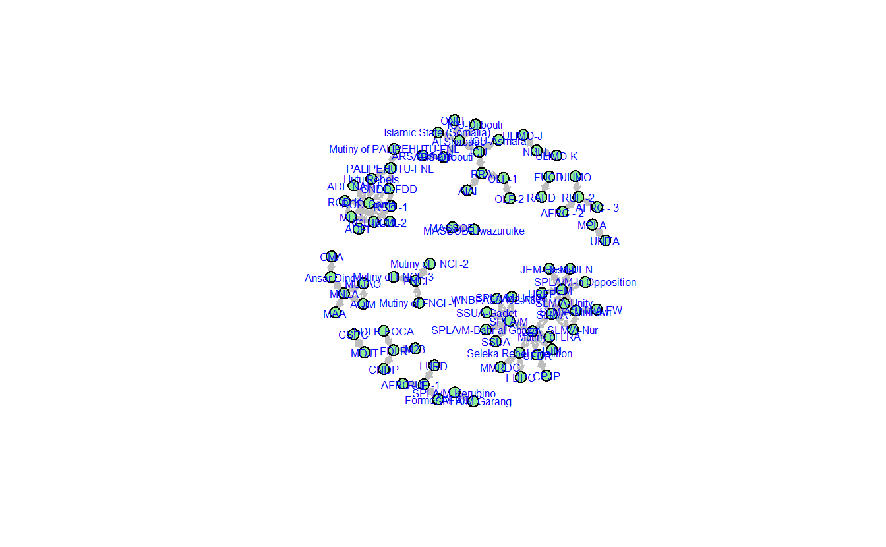

10 Key SNA Functions and Visualization Cheat Sheet
This document’s purpose is to serve as a simple reference guide comparing a handful of basic, visualization-related functions in igraph and statnet. It designed to help you begin to understand some basic differences between the two packages as you learn R, but this is far from an exhaustive list of functions in the two programs.
We will use the same data set for both - igraph and statnet - sections, which is a network comprised of violent interactions among African Violent Extremist Organizations (VEOs). Since you are likely to work with edge lists and matrices, we have included code for importing both.
# Read edge list
teo_el <- read.csv("data/TEO_EL.csv")
# Read matrix
teo_mat <- as.matrix(
read.csv("data/TEO_Matrix.csv",
header = TRUE,
row.names = 1,
check.names = FALSE)
)Take a look at the class for each object:
class(teo_el)[1] "data.frame"class(teo_mat)[1] "matrix" "array" 10.1 igraph
Assuming you have installed it already, we will load igraph first.
library(igraph)10.1.1 Creating a graph object in igraph
Importing either object requires functions designed to work with the object class. For importing data.frame’s you can use the aptly named graph_from_data_frame() function. Transforming a matrix into a graph object in igraph requires the graph_from_adjacency_matrix() function.
First, import the edge list:
g_from_el <- graph_from_data_frame(d = teo_el,
# Is your data directed?
directed = FALSE,
# Will you include a data.frame with node
# attributes?
vertices = NULL)Now, import the matrix:
g_from_mat <- graph_from_adjacency_matrix(adjmatrix = teo_mat,
# How should the matrix be interpreted?
mode = "undirected",
# Create a weighted graph?
weighted = NULL,
# Should the diagonal be zeroed out?
diag = FALSE)Inspect the newly created objects for their class:
class(g_from_el)[1] "igraph"class(g_from_mat)[1] "igraph"As you can see, there are no differences between the two graphs, though they originated from differing data formats.
difference(g_from_el, g_from_mat)IGRAPH 3b91e6a UN-- 83 0 --
+ attr: name (v/c)
+ edges from 3b91e6a (vertex names):10.1.2 Visualization Parameters and Layouts in igraph
The plot function permits you to see the network data visually by recognizing the igraph class.
teo_ig <- graph_from_data_frame(d = teo_el,
directed = FALSE,
vertices = NULL)
plot(teo_ig)
This could be greatly improved!
Now let’s consider making some adjustments. Table 1 provides a summary of commonly used plotting parameters in igraph. See igraph’s manual, Katya Ognyanova’s excellent tutorial on SNA in igraph (https://kateto.net/networks-r-igraph), and igraph’s website (https://igraph.org/r/) for a more comprehensive list of options.
| Parameter | Short Description |
|---|---|
vertex.color |
Adjusts node color. |
vertex.size |
Parameter for node size. Default is 15. |
vertex.shape |
Parameter for node shape (e.g., “sphere,” “circle,” “square”). Default is circle. |
vertex.label |
Parameter for adjusting and setting node labels. Use NA to omit. |
vertex.label.font |
Parameter for node font. Font: 1=plain, 2=bold, 3=italic, 4=bold italic, 5=symbol |
vertex.label.family |
Adjusts font family. Default is ‘serif.’ |
vertex.label.cex |
Parameter for changing font size. |
vertex.label.color |
Parameter for adjusting node label colors. Default is black. |
edge.color |
Parameter for setting edge color. |
edge.width |
Sets edge width (default = 1). |
arrow.mode |
Sets arrow aesthetics: 0=no arrow, 1=back, 2=forward, 3=both. |
edge.arrow.size |
Sets edge arrow size (default = 1). |
edge.curved |
Edge curvature (ranges from 0-1). |
plot(teo_ig,
# Modify vertices
vertex.color = "lightgreen",
vertex.size = 10,
vertex.shape = "sphere",
vertex.label.font = 0.25,
label.family = "Courier",
vertex.label.cex = .75,
vertex.label.color = "darkblue",
# Modify edges
edge.color = "black",
edgewidth = 3,
arrow.mode = 3,
edge.arrow.size = 0.25,
edge.curved = 0.5)
The graph layout can vary. igraph provides multiple layout algorithms (e.g., Kamada-Kawai, circle, etc.), which can be usually located by typing the prefix layout_ or layout_with_ (e.g., layout_with_kk, layout_in_circle(), etc.).
Note you can store a layout as an object (e.g., coords <- layout_with_dh(teo_g)) and subsequently pass it to the plot() function as a parameter for the layout argument (e.g., plot(teog_g, layout = coords)), which we will do below.
coords <- layout_with_kk(teo_ig)Some of the commonly used layout options are outlined below, which you can find in igraph’s help section.
| Parameter | Short Description |
|---|---|
layout_with_dh |
Places vertices of a graph on the plane, according to the simulated annealing algorithm by Davidson and Harel. |
layout_in_circle |
Places vertices on a circle, in the order of their vertex ids.. |
layout_nicely |
This function tries to choose an appropriate graph layout algorithm for the graph, automatically, based on a simple algorithm. |
layout_with_fr |
Places vertices on the plane using the force-directed layout algorithm by Fruchterman and Reingold. |
layout_on_sphere |
Places vertices on a sphere, approximately uniformly, in the order of their vertex ids. |
layout_with_gem |
Places vertices on the plane using the GEM force-directed layout algorithm. |
layout_with_graphopt |
A force-directed layout algorithm, that scales relatively well to large graphs. |
layout_with_kk |
Places the vertices on the plane, or in the 3d space, based on a physical model of springs. |
layout_with_lgl |
A layout generator for larger graphs. |
layout_with_mds |
Multidimensional scaling of some distance matrix defined on the vertices of a graph. |
For instance, the visual below depicts the network using Fruchterman Reingold. Note we’ve turned off the labels so you can see the structure more clearly.
plot(teo_ig,
main = "TEO Fruchterman Reingold Layout",
layout = layout_with_fr,
vertex.color = "lightgreen",
vertex.size = 10,
vertex.shape = "sphere",
vertex.label = NA,
edge.color = "black",
edgewidth = 3,
arrow.mode = 3,
edge.arrow.size = 0.25,
edge.curved = 0.5)
Now, plot the network using Kamada-Kawai.
plot(teo_ig,
main = "TEO Kamada-Kawai Layout",
layout = layout_with_kk,
vertex.color = "lightgreen",
vertex.size = 10,
vertex.shape = "sphere",
vertex.label = NA,
edge.color = "black",
edgewidth = 3,
arrow.mode = 3,
edge.arrow.size = 0.25,
edge.curved = 0.5)
We can look at these side-by-side using par(mfrow = c(1, 2)), which tells igraph to create multiple plots along a single row with two columns.
par(mfrow = c(1,2))
plot(teo_ig,
layout = layout_with_fr,
vertex.color = "lightgreen",
vertex.size = 10,
vertex.shape = "sphere",
vertex.label = NA,
edge.color = "black",
edgewidth = 3,
arrow.mode = 3,
edge.arrow.size = 0.25,
edge.curved = 0.5,
main = "FR Layout")
plot(teo_ig,
# Use the stored coordinates
layout = coords,
vertex.color = "lightgreen",
vertex.size = 10,
vertex.shape = "sphere",
vertex.label = NA,
edge.color = "black",
edgewidth = 3,
arrow.mode = 3,
edge.arrow.size = .25,
edge.curved = .5,
main = "KK Layout")
# Add a legend to plot, for information use ?legend
legend(x = 0,
y = -2,
legend = "VEOs",
pch = 21,
pt.bg = "lightgreen",
pt.cex = 2,
cex = 0.8,
bty = "n",
ncol = 1)
We will detach igraph before moving onto statnet.
detach("package:igraph", unload = TRUE)10.2 statnet
Assuming you have installed it already, we will load statnet first.
library(statnet)10.2.1 Creating a graph object in statnet
For importing data.frame’s you can use the aptly named as.network() function setting the argument matrix.type to "edgelist". Transforming a matrix into a graph object in network requires the as.network() function, but the argument must be set to matrix.type = "adjacency".
First, import the edge list:
g_from_el <- as.network(teo_el,
matrix.type = "edgelist",
directed = FALSE)Now, import the matrix:
g_from_mat <- as.network(teo_el,
matrix.type = "adjacency",
directed = FALSE)Inspect the newly created objects for their class:
class(g_from_el)[1] "network"class(g_from_mat)[1] "network"10.2.2 Visualization Parameters and Layouts in statnet
The gplot() function permits you to see the network data visually by recognizing the network class.
teo_net <- as.network(teo_el,
matrix.type = "edgelist",
directed = FALSE)
gplot(teo_net)
This could be greatly improved!
Table 3 provides a summary of commonly used plotting parameters in statnet. See the sna package’s manual for an exhaustive list.
| Parameter | Short Description |
|---|---|
vertex.col |
Adjusts node color. Red is default. |
vertex.cex |
Parameter for node size. |
displaylabels |
Parameter to turn on or turn off node labels (True or False). |
boxed.labels |
Indicate if you want labels to be enclosed in boxes. |
label.bg |
Background color for label boxes. |
label.pos |
Parameter for positioning labels. See manual for specifics. |
label.cex |
Parameter for changing font size. Default is 1. |
label.col |
Parameter for adjusting node label colors. Default is black. |
edge.col |
Parameter for setting edge color. |
edge.lwd |
Sets edge width. |
usearrows |
Parameter to turn on or turn off edge arrows (True or False). |
displayisolates |
Parameter to show or hide arrows (True or False). |
usecurve |
Edge curvature on or off. |
Now, plot the graph with some changes to the parameters.
gplot(teo_net,
# Modify vertex parameters
vertex.col = "lightgreen",
vertex.cex = 1.5,
displaylabels = TRUE,
label.pos = 5,
label.cex = 0.5,
label.col = "Blue",
# Modify edge parameters
edge.col = "Gray",
displayisolates = FALSE,
usecurve = TRUE)
You can change the layout in **statnet* as well. Here we will use mode to adjust our network layouts.
| Parameter | Short Description |
|---|---|
mode = "spring" |
Places vertices of a graph on the plane, according to the simulated annealing algorithm by Davidson and Harel. |
mode = "springrepulse" |
Places vertices on a circle, in the order of their vertex ids.. |
mode = "kamadakawai" |
This function tries to choose an appropriate graph layout algorithm for the graph, automatically, based on a simple algorithm. |
mode = "fruchtermanreingold" |
Places vertices on the plane using the force-directed layout algorithm by Fruchterman and Reingold.. |
mode = "mds" |
Multidimensional scaling of some distance matrix defined on the vertices of a graph. |
For instance, the visual below depicts the network using Fruchterman Reingold. Note we’ve turned off the labels so you can see the structure more clearly.
gplot(teo_net,
vertex.col = "lightgreen",
vertex.cex = 1.5,
displaylabels = TRUE,
label.pos = 5,
label.cex = .5,
label.col = "Blue",
edge.col = "Gray",
displayisolates = FALSE,
usecurve = TRUE,
mode = "fruchtermanreingold")
Now, with Kamada-Kawai.
gplot(teo_net,
vertex.col = "lightgreen",
vertex.cex = 1.5,
displaylabels = TRUE,
label.pos = 5,
label.cex = .5,
label.col = "Blue",
edge.col = "Gray",
displayisolates = FALSE,
usecurve = TRUE,
mode = "kamadakawai")
Keep in mind that you can use the gplot.layout.* functions to store coordinates and use them later.
fr <- gplot.layout.fruchtermanreingold(teo_net, layout.par = NULL)
kk <- gplot.layout.kamadakawai(teo_net, layout.par = NULL)
par(mfrow = c(1, 2), mar = c(0, 0, 0, 0))
gplot(teo_net,
vertex.col = "lightgreen",
vertex.cex = 1.5,
displaylabels = FALSE,
edge.col = "Gray",
displayisolates = FALSE,
usecurve = TRUE,
# Pass along the layout
coord = fr)
gplot(teo_net,
vertex.col = "lightgreen",
vertex.cex = 1.5,
displaylabels = FALSE,
edge.col = "Gray",
displayisolates = FALSE,
usecurve = TRUE,
# Pass along the layout
coord = kk)